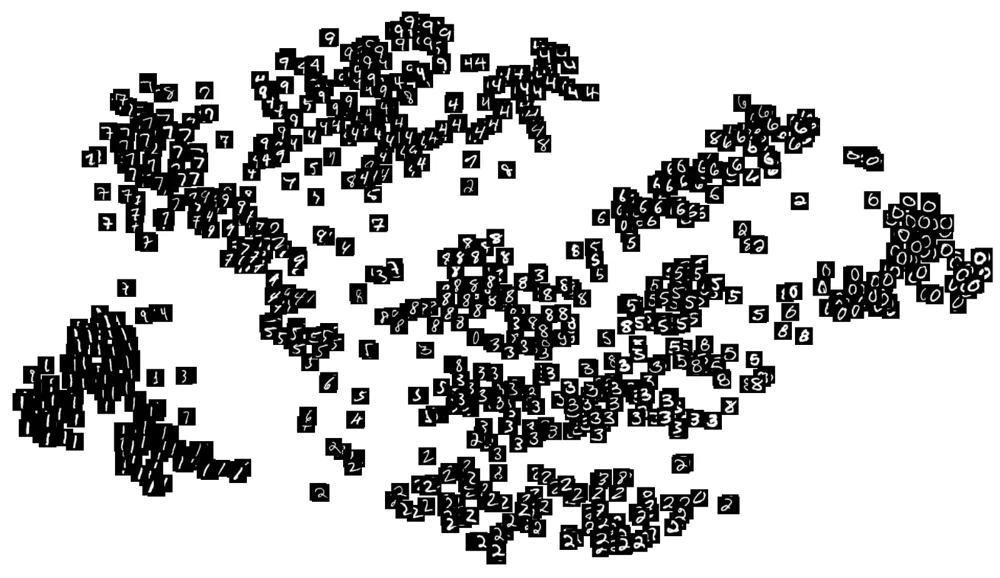

Stable Diffusion
SOUL Visual Design
introduction
text2image generation
How does it work?
What do you [need|need to know] to get started?
Why Doesn't the AI understand me
Inspirational examples
example
santa claus snorkling in the caribbean, western comic book
example
santa claus snorkling in the caribbean, blacksad
How
does AI work?
it's complicated to explain, but easy to use
Compare with MP3 compression
now for AI
encoding step

latent space vector
Latent Space?
lets take a latent space walk

What is latent space


training on data
src link
train your own latent space
- lot's of data eg: the laion-5b dataset
- 5.85 billion image-text pairs.
- a hard drive of 240TB
- 32 x 8 x A100 GPUs
- cost: approx $ 600,000
- carbon cost: 11,250 kg CO2
- or ± 2.5 cars driving 15,000 km/year
talking about data
AI model represent trainings-data
trainings-data...
- represents digital society
- represents many artists
- cleaned for big audience (NSFW, violence, ...)
- ≠ (version of) model, ≠ dataset
lets encode some text too
latent space vector
features visualisation
Remember this one?
right, a decoder is missing!
latent diffusion model
type prompt
get image
What
do you need to know to get started
Dreamstudio intro

DreamStudio: website hosting *Stable Diffusion*
Use: **Google Chrome** or **Brave**
Prompt Engineering
A prompt consists of :
- 1. A (main) topic
- 2. an environment
- 3. details
- 4. atmosphere and context of the scene
- 5. style (artist, medium)
positive prompt
prompt: cyberpunk forest by Salvador Dali

img credit Stable Diffusion 2.0
negative prompt
prompt: cyberpunk forest by Salvador Dali
negative prompt: trees, green

img credit Stable Diffusion 2.0
Help compositing a prompt?
phraser.tech/builder
WHY
the AI doesn't understand me
some tips
strange trees and weird heads
Compare
redditpost
look for trouble
Learn

comic diffusion model
tweak

Complete this image in a way that proves you won’t be replaced by AI

using AI is allowed
twitterthread
Inspirational examples
twitsplain
PWO AI Literacy for designers
| AI Literacy | get LUCA on the AI-train |
| How to design with AI |

|
| artists in residence | enriched creativity through better understanding of AI |